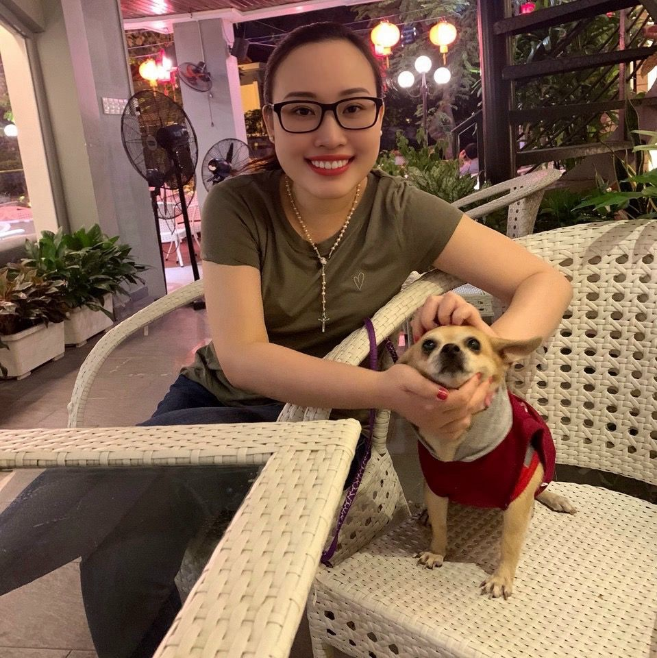

VI HOANG

Summary
I am a daughter of God, using foundation-based testing to verify the features of the world.
Education
- Engineering of Technology Information - University of Saigon (2009-2014)
Work Experience
-
Test Engineer - Success Company
July 2012 - Jul 2013
- Develop manual test cases to thoroughly cover system features.
- Execute test cases for various test levels as required.
- Log and manage defects according to their severity and priority to ensure project quality.
- Provide weekly quality status reports to the team lead based on specific areas.
Test Engineer - Lacviet Company
July 2014 - April 2017
- Develop manual test cases to thoroughly cover system features.
- Execute test cases for various test levels as required.
- Log and manage defects according to their severity and priority to ensure project quality.
- Provide weekly quality status reports to the team lead based on specific areas.
- Train customers on how to use the system.
Senior Test Engineer - KMS Company
Apr 2017 - Jun 2023
- Develop and maintain automation scripts to cover system features.
- Execute test suites, report and analyze the results, maintain scripts, and manage identified bugs.
Engineering Manager - KMS Company
Jul 2023 - Present
- Manage and oversee the project and its resources.
- Train and share QA skills and knowledge across the company.
- Conduct project audits within the company.
Skills
- Leadership and Management: ⭐️⭐️⭐️⭐️⭐️
- Mentorship and Development: ⭐️⭐️⭐️⭐️⭐️
- Technical Expertise: ⭐️⭐️⭐️
- Automation & Quality Assurance: ⭐️⭐️⭐️⭐️⭐️
Awards and Certifications
- Scrum master 1 - 2022
- Scrum master 2 - 2022
Others